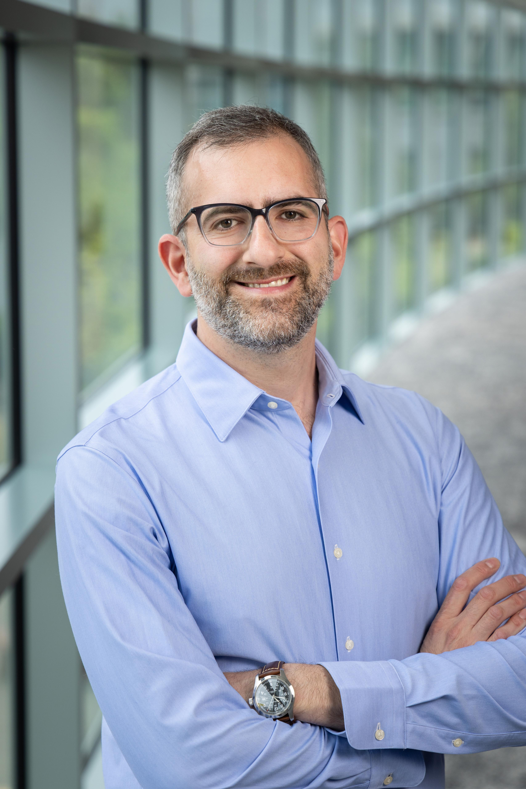

Renzo
Adilardi
Ph.D. · he/him/his
I work at the intersection of cell biology, molecular biology, and imaging. I started in academic research studying chromosome behavior during meiosis, and have since moved into industry developing spatial biology assays that help decode disease at the tissue level.

My scientific story
My Ph.D. in Buenos Aires focused on chromosome evolution, using scorpions as a model system. I studied natural populations, which required fieldwork across Argentina to collect specimens in their natural habitats. I then developed cytogenetic and molecular tools to visualize chromosomes during cell division and analyzed karyotype variation across species.
At UC Berkeley, I joined the Dernburg Lab as a postdoc to study the evolution of meiosis in nematodes. I developed a computational pipeline to identify tandem repeats in genome assemblies and convert them into cost-effective FISH probes, used CRISPR mutants to dissect meiotic mechanisms, and played a central role in establishing Pristionchus pacificus as a comparative model for meiosis research.
Since 2023 I have been at Advanced Cell Diagnostics (Bio-Techne), developing automated in situ hybridization and multiomics assays for translational and research applications using RNAscope technology.
What I Do
I develop automated tissue-based assays for spatial biology applications, building multiplexed workflows that detect RNA and protein simultaneously in FFPE tissue sections on translational and research platforms. My work spans the full product cycle, from early feasibility and assay optimization through cross-functional review, technology transfer, and documentation. Most recently, I served as technical lead for the development of a novel automated multiomics assay through to launch.
Publications


Career
Develop and optimize automated spatial biology assays (ISH/IHC/IF) using RNAscope technology on multiple automated platforms (Roche/Ventana and Leica). Collaborate with cross-functional teams to advance multiplexed RNA and protein detection products from development through manufacturing launch.
Combined computational, molecular, and cytogenetic approaches to study how meiosis evolves across nematode species. Built a pipeline for designing cost-effective FISH probes from genome assemblies, used CRISPR mutants to dissect meiotic mechanisms, and helped establish P. pacificus as a comparative model.

To understand how chromatin is organized during meiotic division in birds, I developed probes for combined in situ hybridization and immunolocalization and adapted protocols for embryonic and germline tissues in chickens and quails.

My doctoral research used scorpions as a model to study chromosome evolution. I developed molecular and cytological tools to visualize cell division, analyzed karyotypes across the Buthidae family in Argentina, and described a new endemic species. I published six peer-reviewed papers and built the experimental foundation that would guide my later postdoctoral work.

Mentorship & Teaching
Mentored an undergraduate intern in the R&D department through Bio-Techne's summer internship program, guiding an independent assay optimization project from experimental design through data analysis and final presentation.
Mentored an undergraduate researcher through the NSF Research Experiences for Undergraduates program, guiding their independent project in chromosome biology and providing hands-on training in cytological and molecular techniques.
Assisted in teaching MCB 200A/B — Fundamentals of Molecular and Cell Biology, a core graduate course for incoming Ph.D. students in the Department of Molecular and Cell Biology.
Taught undergraduate courses in Introduction to Molecular and Cell Biology and Genetics I over multiple academic years, leading practical sessions, and mentoring students.